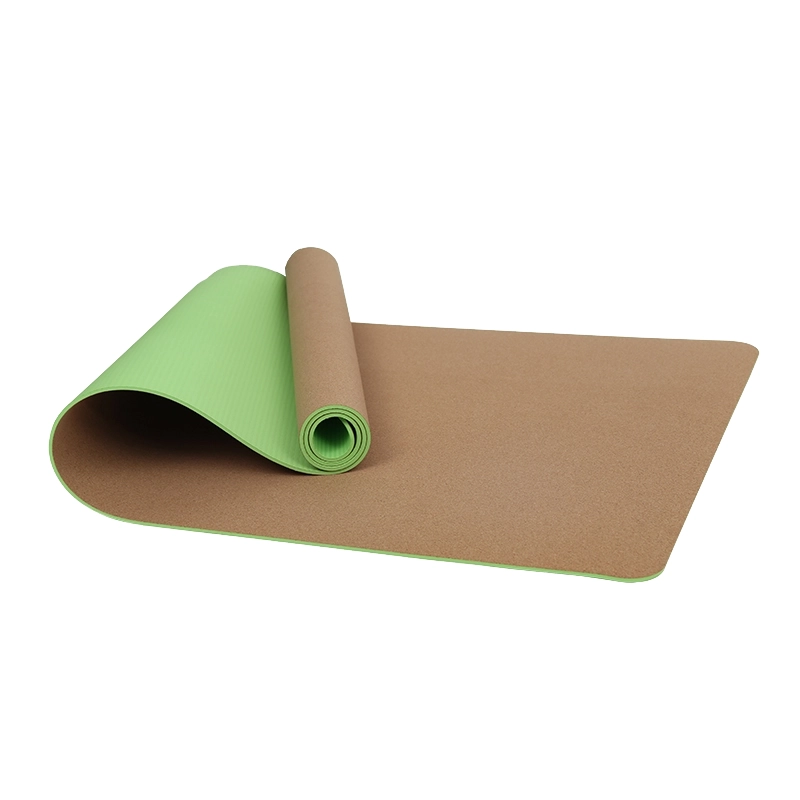

Pavimenti per il benessere, sale per trattamenti termali e kit per lo yoga in camera, progettati pensando alla praticità delle pulizie piuttosto che all'estetica sugli scaffali. Materiali a basso odore, superfici facili da pulire, tappetini di dimensioni adatte a un ripiano standard dell’armadio — e il vostro stemma impresso su ogni tappetino. Produciamo anche la linea di articoli in sughero e pelle scamosciata che il vostro negozio termale vende all’ingresso.
Consideralo come una distinta base. Indicaci quali righe desideri e te le includeremo in un unico preventivo di spedizione.
| Articolo | Dove viene utilizzato | Specifiche consigliate |
|---|---|---|
| 01 Tappetini da yoga in camera | Il tappetino che sta nell'armadio: arrotolato ben stretto, inodore, facile da pulire | TPE 173–183 × 61 cm, 6 mm; logo in rilievo o inciso al laser; tracolla opzionale |
| 02 Area benessere / meditazione | Un piano o uno studio dedicato alla meditazione silenziosa — i tappetini rotondi appaiono come progettati, non improvvisati | Tavolino “60 × 60 cm”, 4.5 mm, in sughero o PU; cuscini 64 × 24 × 13 cm |
| 03 Trattamenti a bordo piscina e nella spa | Ambienti umidi, trattati con cloro o oleosi, dove l’aderenza e la pulizia sono fondamentali | PU + gomma naturale, 4,5–5 mm; superficie in sughero; a cellule chiuse, quindi non assorbe acqua |
| 04 Linea di prodotti per spa | Venduto all’ingresso della spa o offerto in omaggio agli ospiti delle suite — deve essere accattivante, non solo funzionale | Le superfici in microfibra scamosciata e sughero si prestano alla stampa ad alta definizione; con le tue immagini o le nostre |
| 05 Tappetini da viaggio | Articolo da concierge e da viaggio — 1.5 mm, si ripiega o si arrotola trasformandosi in una borsa da viaggio | Tappetino da viaggio ultrasottile in gomma “PU”, 1.5 mm; custodia da trasporto stampata |
| 06 Attrezzature e deposito | Blocchi, cinturini e borse, così il kit appare completo nella stanza | EVA blocchi, cinturini “TPE”, borse personalizzate con il nome della tua struttura |

Eco TPE (monostrato / doppio strato), superficie antiscivolo testurizzata, larghezze 61 / 66 / 80 / 90 cm (24" / 26" / 31,5" / 35,5"), spessore 6–12 mm (1/4"–1/2"). Qualità piena, economica e speciale.

TPE · 183cm*61cm*6 / 8mm / 183cm*80cm*6 / 8mm / Oppure personalizzabile

Base in gomma naturale + superficie antiscivolo “PU”; presa eccellente per lo yoga caldo e le palestre.

Cork+Rubber · 183x66cm

Cork+TPE · 183x66cm

TPE · 40x60cm

Pelle scamosciata + gomma · 68cm

PU+Gomma · 40x60cm

PU + tappetino da meditazione in gomma naturale (40×60 / 60×60 cm, 4.5 mm) con un cuscino di sostegno in poliestere al 100% (64×24×13 cm, 550 g); colori personalizzati.

100% poliestere + spugna · 64*24*13CM

Pelle scamosciata + gomma · 185x68cm

Pelle scamosciata + gomma · 185x68cm

Pelle scamosciata + gomma · 185x68cm

PU+Gomma · 185x68cm

Su ordinazione

Blocchi "EVA" ad alta densità; supporto stabile per le posizioni e gli allungamenti, disponibili in diversi colori.

Su ordinazione

Silicone · 20*20cm
Gli acquirenti del settore dell’ospitalità prestano attenzione a tre aspetti a cui le nostre specifiche rispondono direttamente: l'odore del materiale (il TPEe e la gomma naturale sono a celle chiuse e a basso contenuto di COV, quindi il tappetino non lascia odori nell'armadio), la pulizia (le superfici a celle chiuse possono essere pulite con un disinfettante standard per hotel) e il diametro di arrotolamento (un tappetino 6 mm si arrotola fino a circa 16 cm, misura che si adatta ai ripiani standard degli armadi). Comunicateci il numero di camere e se il kit è previsto per camera o per piano dedicato al benessere, e vi forniremo un preventivo sia per l’installazione completa in tutta la struttura sia per una riserva del 10% destinata al servizio di pulizia.
Inviateci il vostro disegno, il prezzo desiderato o una foto: vi risponderemo entro 24 ore con un preventivo e un piano di campionatura. Quantità minima ordinabile (MOQ) a partire da 100 pezzi.
Richiedi un preventivo